ГОРОДСКОЙ ПРИРОДНЫЙ АТЛАС
Зелёные острова
Москвы
Расскажи о любимом парке или сквере. Вместе соберём карту зелёной Москвы — такой, какой её видишь ты.
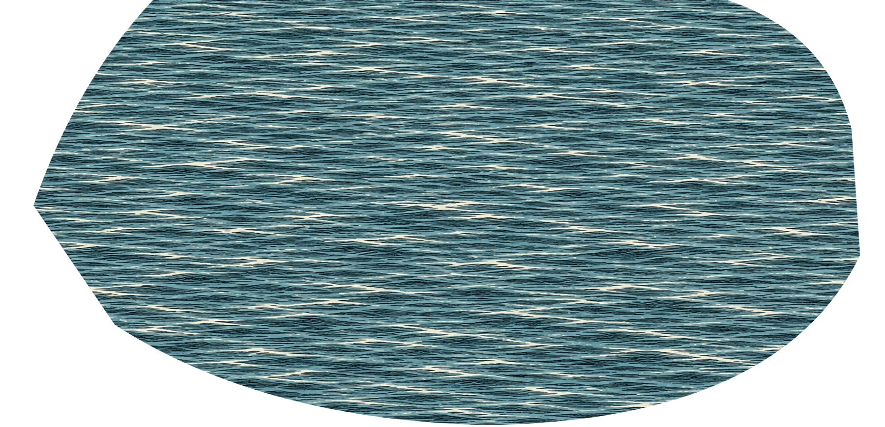
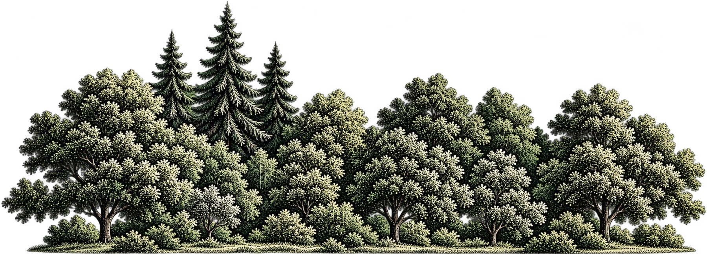
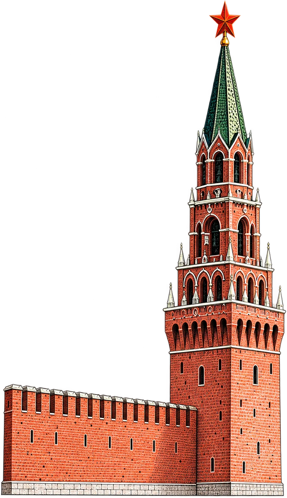
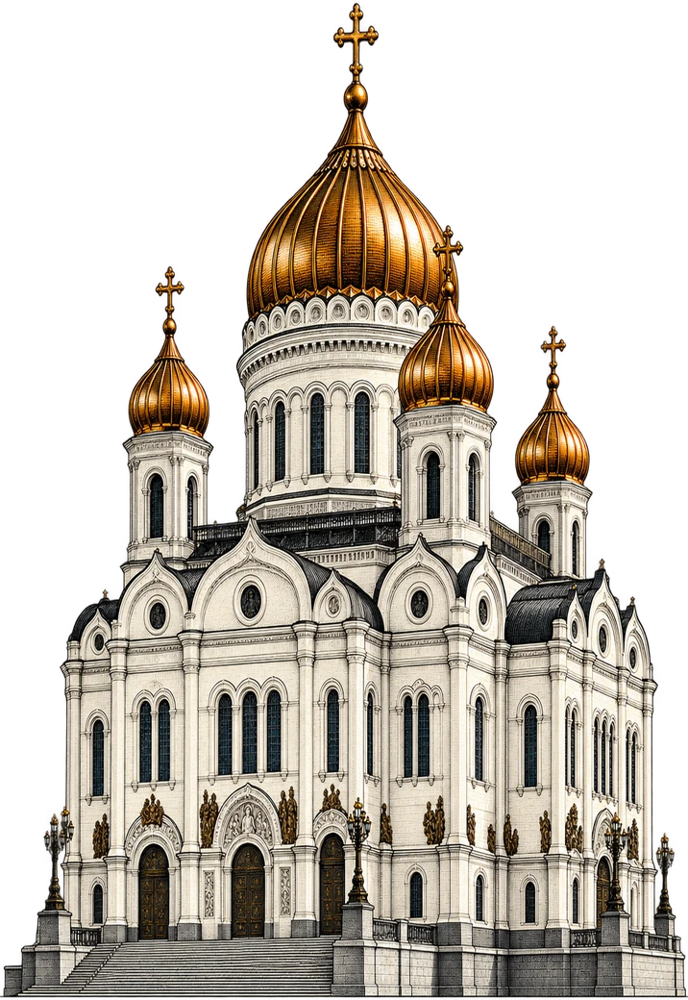
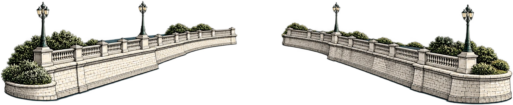
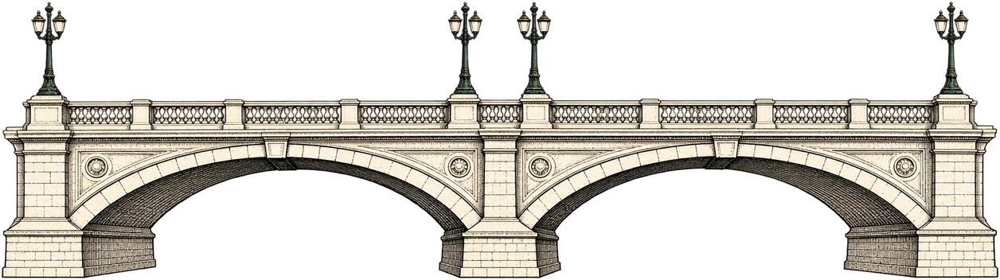
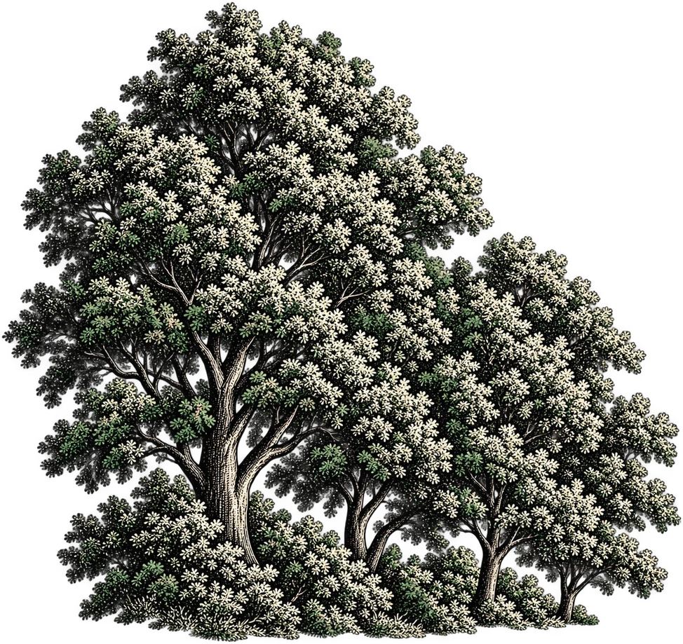
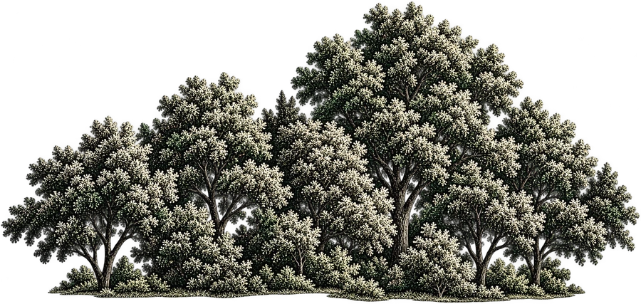
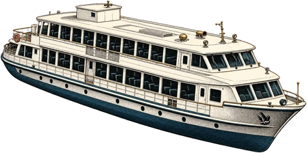
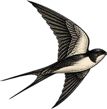
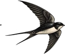
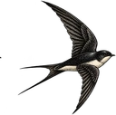
55°45′ с. ш. · 37°37′ в. д.В привычном городе — новые открытия
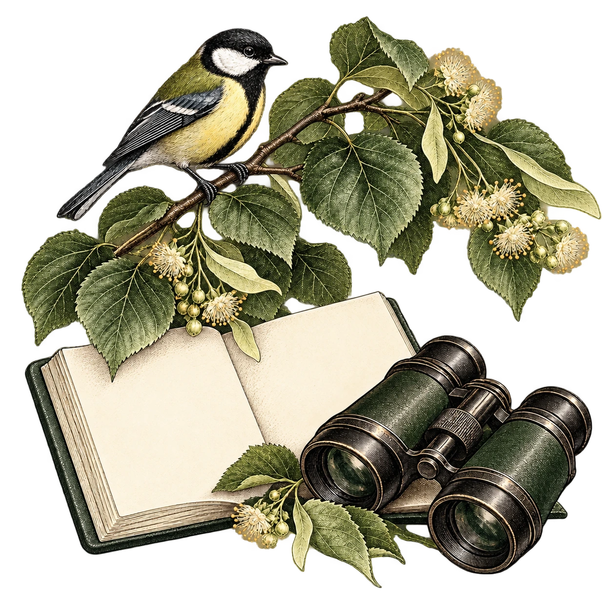
ОБ АКЦИИ
У каждого свой
зелёный остров
В одном и том же парке кто-то любит гулять, кто-то наблюдает за птицами, а кто-то знает укромное место, где особенно красиво осенью.
Нам интересно, какие уголки природы Москвы любишь ты. Что в них замечаешь, что тебе нравится и что, возможно, хотелось бы изменить.
Мы соберём ваши истории, фотографии и рисунки на одной карте.
КАК ПРИНЯТЬ УЧАСТИЕ
Расскажи
о своём месте
Это просто и займёт около 5–7 минут
Найди свой остров
Выбери на карте парк, сквер, лес или другое природное место.
Поделись наблюдениями
Расскажи, что тебе здесь нравится и что ты замечаешь.
Добавь свою историю
По желанию прикрепи фотографию, рисунок или небольшой рассказ.
После проверки и при наличии разрешения на публикацию материалы смогут появиться на карте.
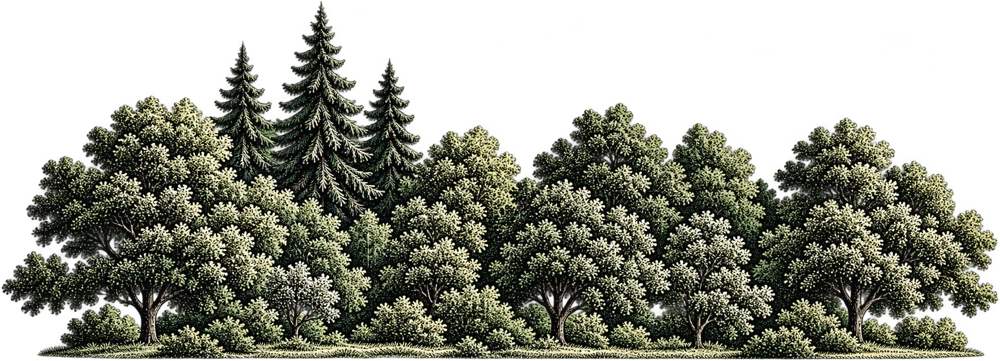
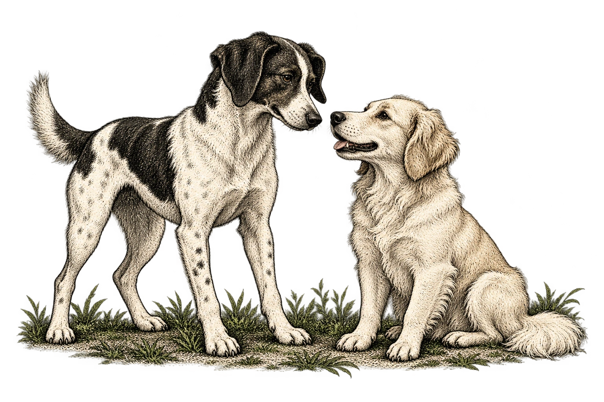
ЗНАКОМЫЕ МЕСТА. НОВЫЕ ИСТОРИИ.
КАРТА ОБЩИХ ОТКРЫТИЙ
Открой зелёные острова
Москвы
У каждого места своя история. Выбирай точки на карте, смотри фотографии и рисунки, читай рассказы участников.
Пример данных
Такого места пока не нашли
Попробуй другое название или сбрось фильтры.
ГОРОД НАЧИНАЕТСЯ С ТЕБЯ
А где твой
зелёный остров?
Поделись своим местом — и помоги кому-то открыть зелёную Москву заново.